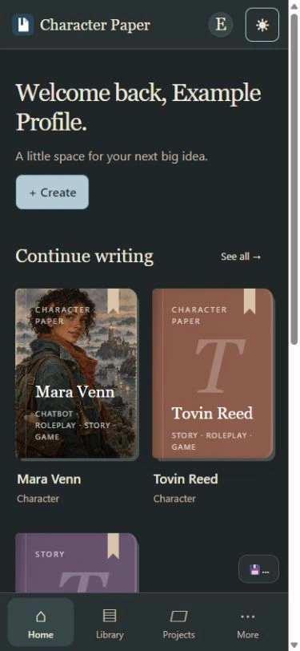
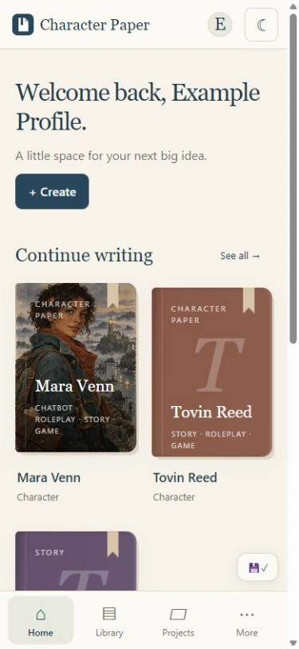
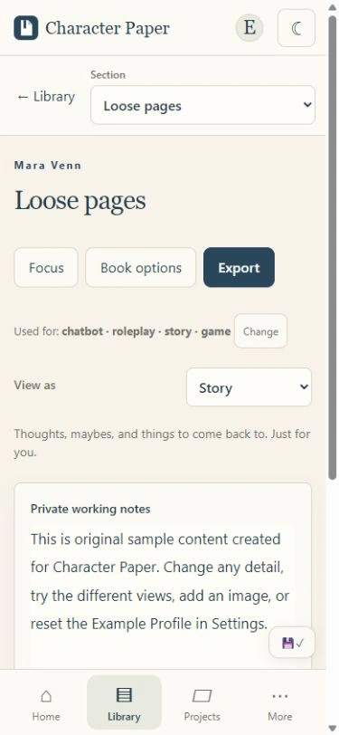
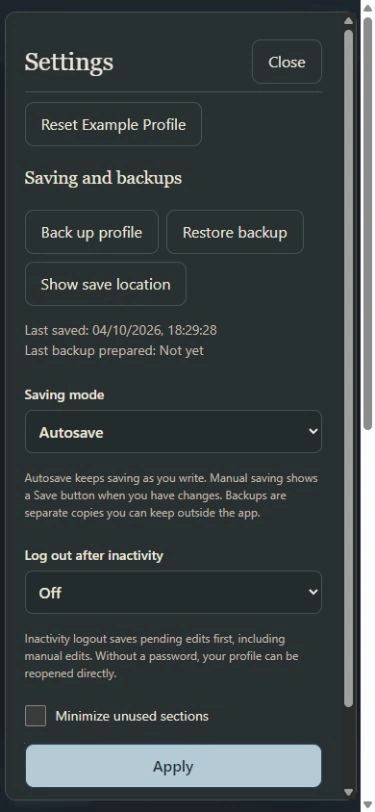

Character Paper / A place for imaginary people
Characters with depth.
Stories with
room to grow.
A structured character-building tool for writers, roleplayers, storytellers, game creators, and chatbot creators. Give your characters a place of their own — and keep your ideas close.
Windows x64 installer · Android APK




Start with a character
A few facts.
A whole person.
Build with structured fields, freeform writing, or both. Organize appearance, personality, history, speech, and the details that make a character yours. Add custom sections when the idea needs more room.
Room for your thinking.
Optional section notes hold rough thoughts and reminders. Private notes stay out of normal character and manuscript exports; full profile backups retain them.
Switch between Story, Roleplay, Game, and Chatbot views to focus on the relevant writing without deleting the rest.
II / Keep the writing moving
From a character
to a page.
Keep characters, stories, and projects in one library. Write continuously or organize a story into chapters, with a separate place for cast, references, and private notes.
Save a detailed character bio as text. For chatbot work, export supported V2 JSON character cards or copy destination fields from the export preview.


Templates carry a useful structure into the next character. Protected snapshots let you keep an earlier state to return to.


III / Keep it yours
A quiet place
to make things.
Your profiles live locally. Password protection is optional, and you can back up a profile to move it or keep a copy outside the app.
Explore the editable Example Profile when you want to see how a character, a relationship, and a story can fit together.
Give the idea somewhere to live